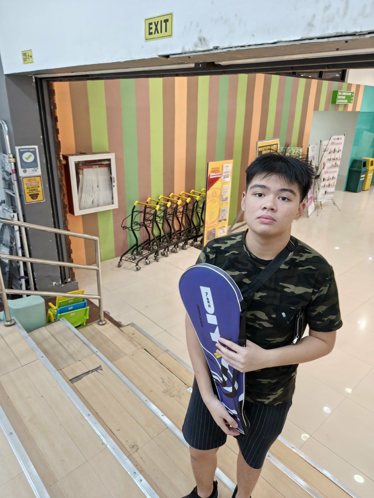

|
Terrence de Real |
|
|---|---|---|
|
|
||
Academic Scheduling and Information Management
Academic Scheduling and Information Management provides students with an intuitive interface to plan, edit, and manage their academic schedules. It supports calendar conflict detection, allows editing of TBA sections, and offers a seamless workflow. Designed for efficiency and flexibility, it gives students a powerful tool to organize their semester effectively.
Greenvale Pollution Reduction Planner
The Greenvale Pollution Reduction Planner is a desktop tool that uses the simplex algorithm from linear programming to help determine the most cost-efficient combination of mitigation projects to meet Greenvale’s pollution-reduction targets. It provides an easy interface for selecting projects and shows the Simplex Method steps, tableaus, and final optimized results.
Skills
I am a detail-oriented and creative problem solver with good technical and organizational skills. I excel in algorithmic design, able to break down difficult problems into efficient, clean solutions. I am experienced in selecting and organizing data structures for optimal performance.
My work ethic is structured and reliable, allowing me to plan and execute projects effectively. Additionally, I take pride in producing clean, readable, and maintainable code.
About Me |
|
|---|---|
|
|
 |